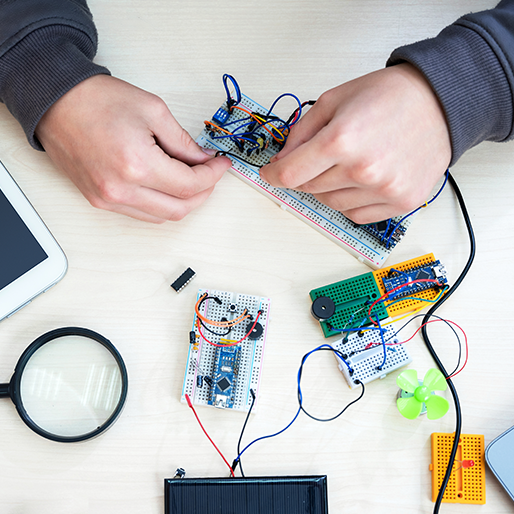

Bridging Embedded Engineering and Web Development
September 26, 2025 by Delmika Johnson
In today’s connected world, embedded systems rarely exist in isolation. From smart home devices to industrial sensors, users expect not only reliable hardware performance but also seamless web-based interfaces for monitoring and control. This intersection of embedded engineering and web development is where innovation truly takes shape. At its core, embedded engineering focuses on designing efficient, resource-conscious systems. Microcontrollers and processors must handle tasks with strict timing and limited memory. Meanwhile, web development emphasizes accessibility and usability, enabling users to interact with these systems through familiar browsers or mobile applications. When these fields meet, hardware gains a voice that end users can understand. One practical example is IoT devices. A simple sensor node can collect environmental data, but when paired with a lightweight web server running on the device, it can serve real-time dashboards accessible from any networked device. Technologies like REST APIs, WebSockets, and MQTT provide the communication layer between embedded hardware and the broader internet. The challenge lies in optimization. Embedded engineers must balance the hardware’s constraints with the overhead of networking protocols and web standards. Developers often adopt micro web frameworks or offload processing to cloud services, ensuring smooth experiences without overwhelming the device. As embedded systems become smarter and more connected, the role of web development in shaping user interaction grows. This synergy empowers engineers to deliver solutions that are not only technically robust but also intuitive, user-friendly, and scalable across industries.